Pipe - generates power-ups or enemies placed on top, with some enemies able to hide inside. Comes in four colors, can face any direction, and be any length. Players can also travel through pipes. Right-click the pipe’s top-left corner and select “Make new pipe-warp” to open a menu of five sub-areas. Choose one, then place the exit pipe wherever you like. You can also set a pipe to be the end of the stage, or shoot you into the air like a cannon.
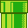
Vine - used by the player to climb vertically. May be set to any length.
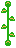
Door - players enter by pressing UP. Right-click to choose one of five sub-areas, then place the exit door anywhere. Doors can be set to Locked (require a key), P-Switch (require a P-Switch to open), or end the stage.
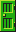
OneWay Wall - placeable in any of the four directions, allowing passage from only one side. Useful as a platform or barrier.
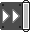
Conveyor Belt - automatically moves anything placed on top. Direction, speed, and length are adjustable.
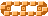
Trampoline - bounces the player upward. Cannot be picked up or moved, and can even be placed floating in midair.
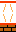
Bumper - bounces the player in the direction they touch it. Can be powered up to increase its size.

Fire Bar - a rotating chain of fireballs. Length, speed, and starting angle can be adjusted.
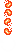
Roto Disc - a deadly spinning disc that rotates around a central point. You can adjust its angle, speed, and distance from the center.
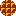
Ball N’ Chain - its speed, distance from the center, angle, and swing style can be adjusted. It can rotate in a full circle or swing like a pendulum.
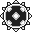
Bill Blaster - shoots objects or enemies from its cannon with adjustable height, firing interval, and chance to fire after each interval. You can limit how many projectiles it shoots before some must despawn or be defeated to make room for new ones By default, it fires Bullet Bills but can shoot from 45 different objects and enemies. It can be powered-up, making all projectiles powered-up as well Enabling BetterProjectile turns the blaster red, increases its firing range, and transforms Bullet Bills into Homing Bills.
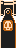
Bullet Bill - enemies that fly straight horizontally or vertically If IsHomingMode is enabled, they turn red and track the player.
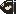
Banzai Bill Blaster - shoots Banzai Bills with adjustable firing interval and chance to fire after each interval.
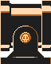
Banzai Bill - slow enemies that fly straight horizontally or vertically. When powered-up, they become King Bills. They cannot be stomped, and they are able to break through nearly everything.
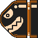
Cannon - fires Cannonballs, Coins, or Bombs in any of 8 directions. You can adjust the firing interval and the chance it will fire after each interval. Enabling FasterProjectile turns the cannon red and increases projectile speed. Cannons can also be powered-up, making everything they fire powered-up as well.
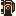
Cannonball - travels in a straight line in any of the eight directions. When FastMode is enabled, it turns red and moves faster. It can also be powered-up.
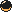
Grinder - stationary rotating hazard. Can be powered-up to double its size.
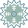
Skewer - a pillar that retracts before lunging out in any of the four directions. It can reach up to 25 tiles, striking both blocks and the player in its path.
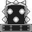
Burner - shoots a flame from its base in any of the four directions. Its timing can be set to either “Wait -> Fire” or “Fire -> Wait,” allowing for trickier patterns that are harder to dodge.
Message Block - when hit from below, it displays a message. You can include almost any amount of text, which is shown across multiple pages if needed.
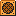
ON/OFF Switch - toggles all ON/OFF blocks to the opposite state.
ON/OFF Button - can only be activated when the current ON/OFF state matches its setting. Pressing it switches all ON/OFF blocks to the opposite state.
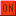
ON/OFF Blocks - blocks that can either be solid or dotted-lines. The state can be changed by hitting ON/OFF Switches/Buttons.
Water - a liquid that allows the player to swim. Automatically fills the stage in Underwater levels
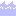
Poison - a toxic liquid. The player will die instantly when touched.
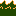
Lava - a very hot liquid. The player will die instantly when touched.
Sign - a decorative object used to guide the player. Can be rotated to face any of 8 directions.

Start Point Sign - a signboard placed at the beginning of the level. It can’t be interacted with, but it is affected by gravity.
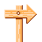
Text - allows you to display writing in your level. It can’t be interacted with, but you can customize the font, size, and color, toggle a shadow, choose whether it appears above all other objects, and apply special effects like blinking or shining.
Pixel Art - displays pixel-art created in the Pixel-Art Manager. (See the “Tools” section for instructions on making pixel-art.) With the object itself, you can adjust scale, opacity, behavior, angle, display order, and flip it horizontally or vertically.
Animated Pixel Art - combines multiple pixel-art IDs to create an animation. You can adjust the delay between frames and choose whether it loops. (See the “Tools” section for instructions on making pixel-art.)
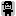
Pixel Art Wall - allows you to create large sections of pixel-art. These can also be animated. (See the “Tools” section for instructions on making pixel-art.)
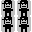
Magnet - keeps objects and enemies fixed in place, either on the ground or suspended in the air.
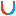
Crate - a resizable, destructible object with different types:
- Wooden: Breaks from ground-pounding.
- Pumpkin: Breaks from ground-pounding or hitting from below.
- Metal: Breaks only when hit by Mega Mario or King Bills.
- Ice: Breaks after 3 ground-pounds or hits from below (2 if powered-up). Can also be melted with fire.
- Crystal: Breaks after 3 ground-pounds or hits from below (2 if powered-up). Has no gravity and cannot be melted.
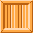